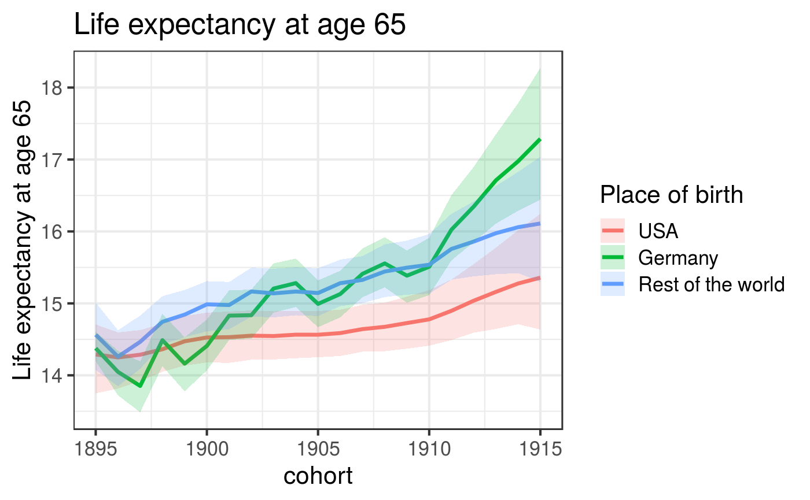

vignettes/truncated_gompertz_mortality.Rmd
truncated_gompertz_mortality.RmdAs the observed deaths in the CenSoc dataset are truncated to be within a certain age range which varies across cohorts, any comparison across mortality cohorts will be misleading. The dataset must be adjusted for the truncation. Fortunately, a Bayesian truncated Gompertz model can be used for this dataset.
This vignette presents useful tools from the censoc R package and demonstrates an application of the Bayesian truncated Gompertz model. For this case, the example will be an estimation of life expectancy at age 65 (i.e. the average years left to live at age 65) by cohort and place of birth, for cohorts 1895-1915 using the CenSoc dataset.
For more information: CenSoc project, dataset details and the Bayesian truncated Gompertz model.
library(tidyverse)
library(data.table)
library(rjags)
library(R2jags)
library(censoc)After loading the necessary packages and data, create age of death and race categories variables using functions from the censoc package.
# Variables
df <- add_age_of_death_column(df) #age of death
df$bpl_cat <- NA #Reducing natinality into fewer categories in a new variable
df$bpl_cat[df$BPL<= 09900] <- 1 #"Native"
df$bpl_cat[df$BPL == 45300] <-2 #Germany
df$bpl_cat[is.na(df$bpl_cat)] <-3 # Rest of the world
# Tabulating the deaths:
tab_df <- tabulate_deaths(df, bpl_cat)
tab_df$bpl_label <- NA # defining the labels for each race category
tab_df$bpl_label[tab_df$bpl_cat==1] <- "USA"
tab_df$bpl_label[tab_df$bpl_cat==2] <- "Germany"
tab_df$bpl_label[tab_df$bpl_cat==3] <- "Rest of the world"
cohorts <- 1895:1915
tab_df <- filter(tab_df, byear %in% cohorts) # data only contains these cohortsmin_age <- 65
meta_data <- get_meta_data(tab_df, min_age)
group_labels <- meta_data$group_labels
# Model
mod <- truncated_gompertz_model(tab_df, min_age, number_chains = 4, number_iterations = 4000, run_in_parallel = TRUE)## Processing data into JAGS format.
## Running model.
## Model finished.
## Maximum Rhat is 1.2362057034082.# Life expectancy (ex) and hazard rate (hx) estimates
res <- get_estimated_hx_ex(mod, ncohorts, ngroups, group_labels, nages, alpha_level = 0.05)
ex_df <- res$ex_df # extract life expectancy dataframegroup_title <- "Place of birth"
ex_age <- 65# Age of life expectancy to be plotted
#Plot
plot_ex(ex_df, ex_age, group_title)
Please refer to IPUMS documentation Census variables codes.
As many categories of a variable can be included. However, the categories must be sequentially numbered for the model to run.
This example used the cohort born between 1895 and 1915. The cohort may be modified to include any years between 1865 to 1940.
Computationally, the minimum age can be as low as 0. However, in terms of the Gompertz mortality model, we are interested in adults. So, min_age should be greater than insert AGE.
The maximum age is not set by the user, it its fixed at 110. However, setting ex_age at 110 will yield a graph with no useful results.
For the truncated_gompertz_model function to work, the tab_df must follow the ordering used above. In particular, the third column must be a number referring to the group level. The fifth column must be a label for each group.
For the model to converge, the value of “Rhat” must be 1.1 or lower. If your model did not converge, try running it for more iterations. NOTE: Model run time can be quite long. In this case, for 4,000 iterations it could take 3 minutes using 3 place of birth categories. However, increasing the number of iterations or the categories, increases the run time..